Cigar Review: Oliva Serie G Robusto
It another lovely looking cigar. It does look very much like a chocolate bar when everything is out of the cellophane. The size of this cigar is 4.5 x 50 which I think it's a cute size for a short relaxing smoke. 🍫
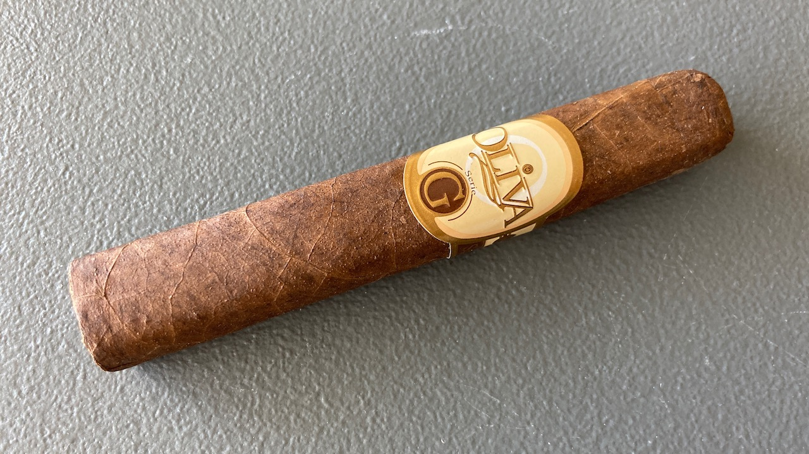 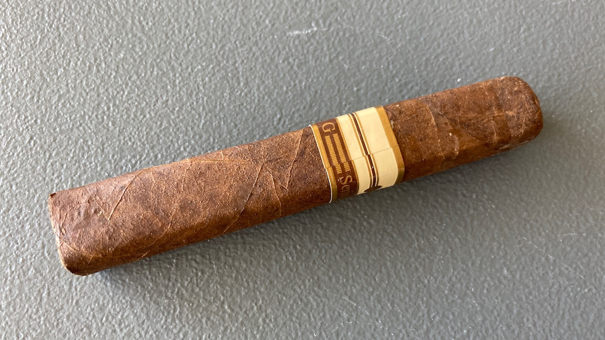
I really like the appearance of the cigar. As much as it looks like a chocolate bar, I did not taste much of chocolate/coca or any sweetness. Maybe it has a very subtle hint of dark chocolate and black coffee, but that was not the primary flavour that I received.
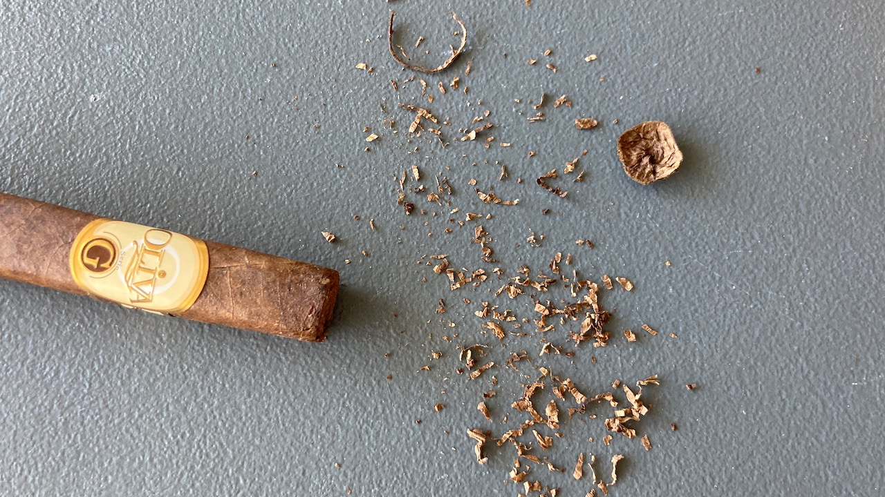 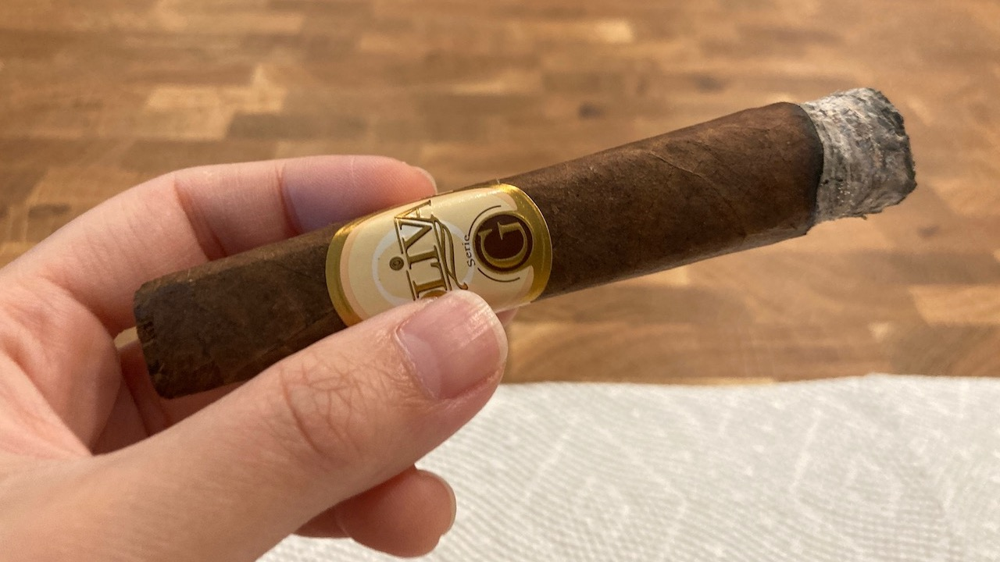
The flavour is mostly filled with a floral type of nuttiness. It is a different type of nuttiness from Montecristo White Series or Flor de las Antillas. Oliva G taste more like almond type of nut to me whereas the other ones remind me more of cashew. I quite enjoy it despite the fact that I don't usually like eating nuts. 🌰
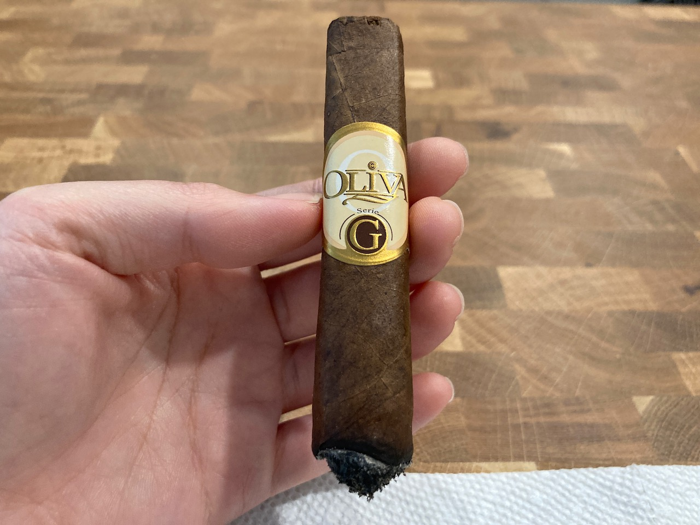 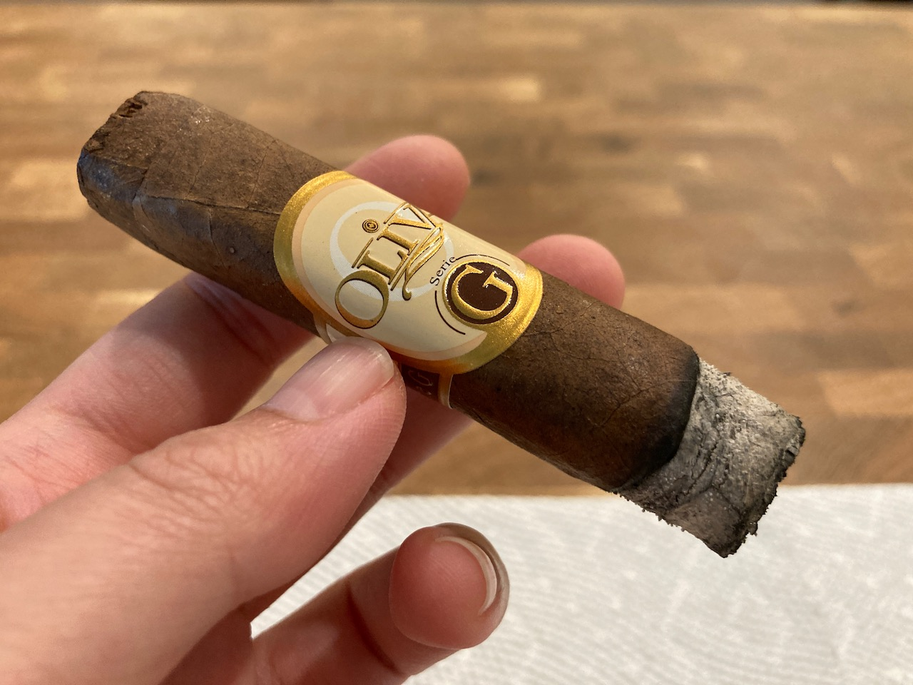
The draw is perfect for me. I was taking small puffs and good breaks trying not to overheat the cigar. I purged the cigar from time to time too. I'd say that it went pretty well. I was able to taste more. The ash, however, has some strange white dots on it throughout the smoke. I'm not sure what is going on there. 😅
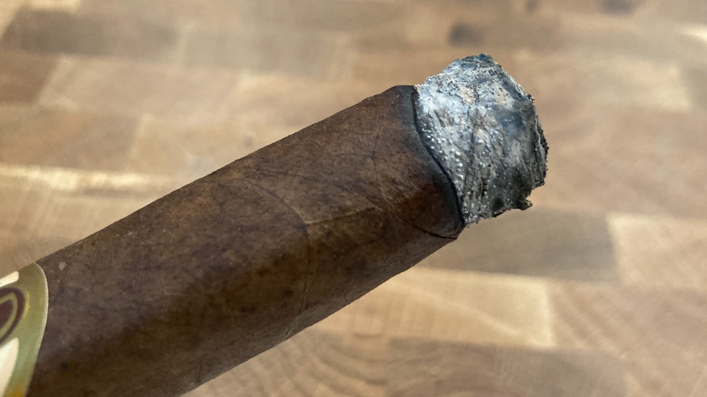
The cigar was smooth and did not have any harsh sharp taste. The smoke time for me was about 45min. I took my time. I was able to reach pretty much the end of this cigar. I think this is the first for me to reach this far on a premium cigar. The flavour was not as prominent at this point and I ended as soon as I tasted that familiar sharp bitter taste.
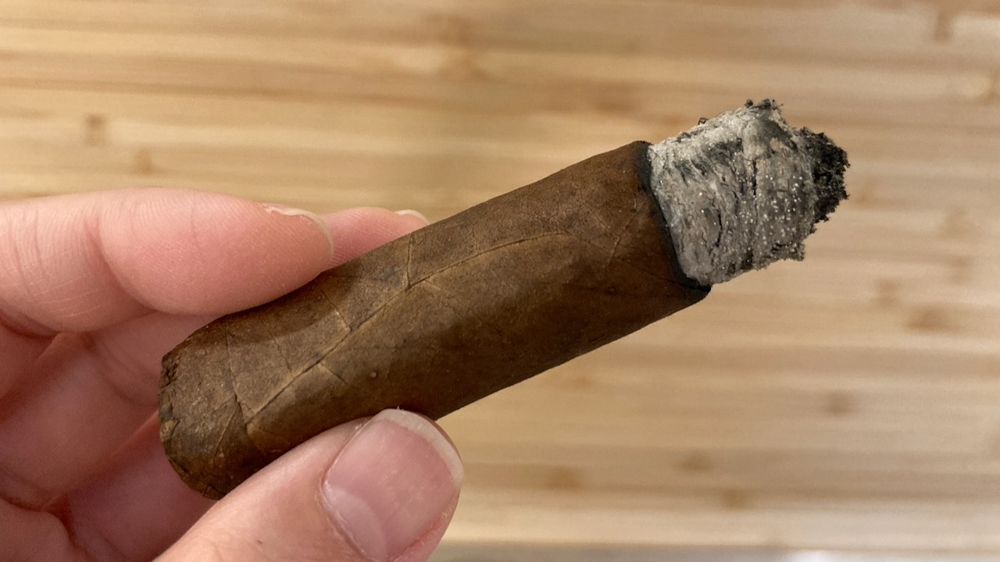 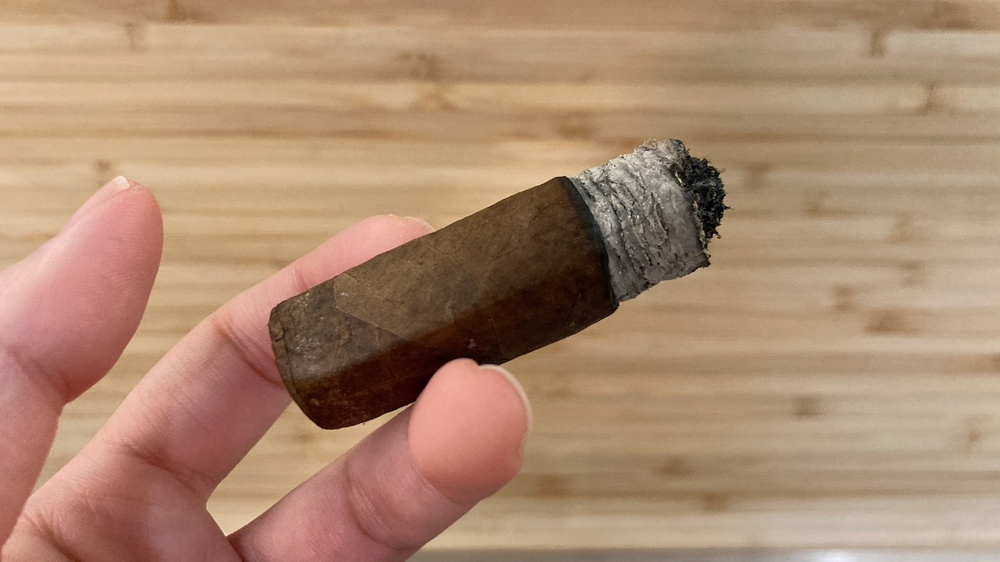
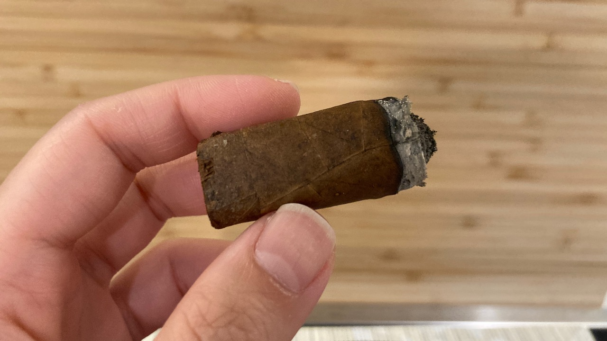 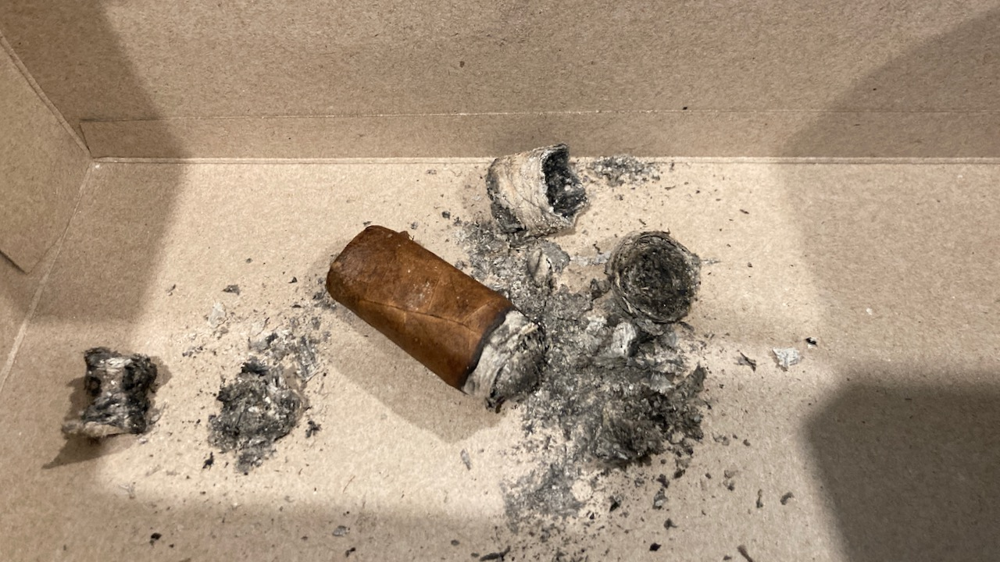
I was absolutely amazed by how good this little cigar was. The flavour was good. It did not produce a huge amount of smoke that made it a perfect cigar to have at home (with proper ventilation) in my opinion. It was a fantastic smoke and I enjoy my time with it thoroughly. ❤
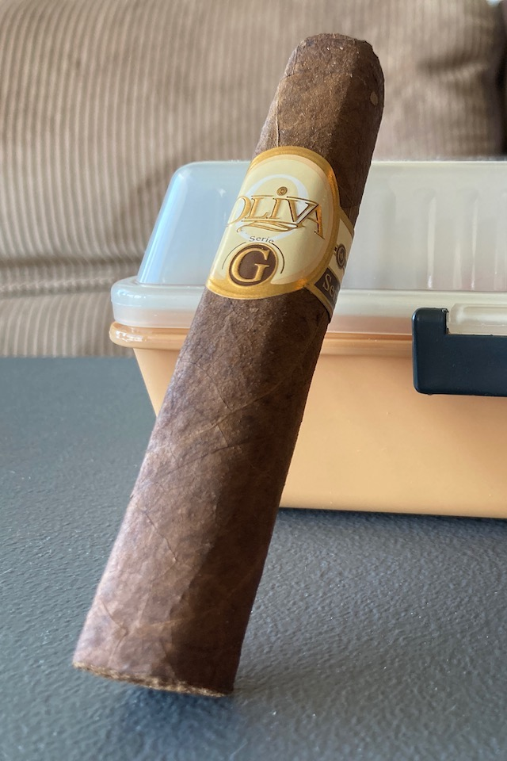 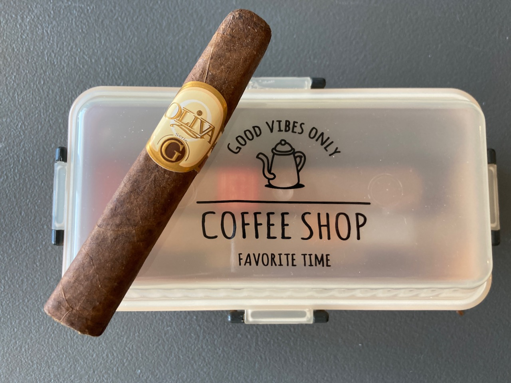 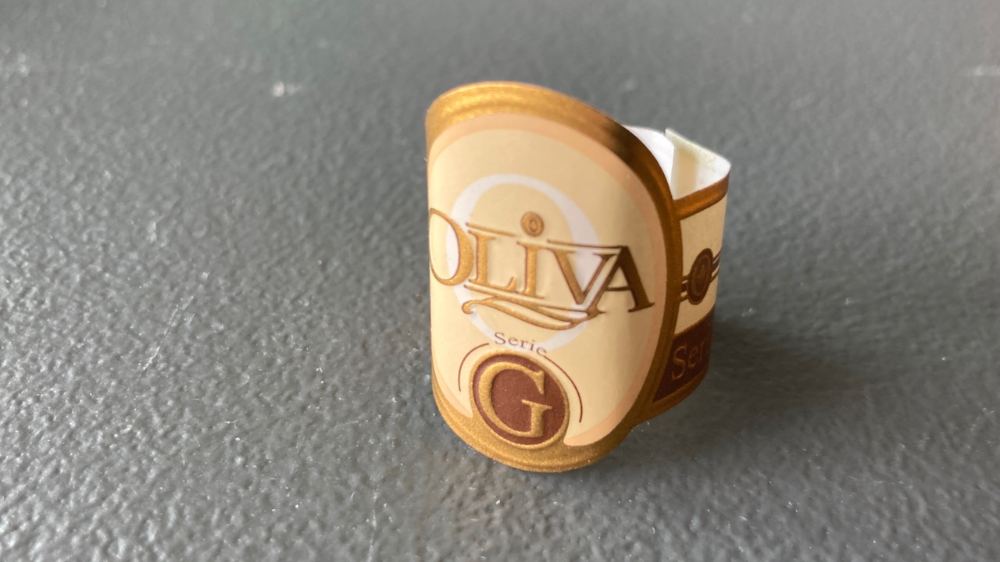
Thank you for reading! If you enjoy this post, please consider supporting this website and allow me to share more of my cigar journey with you. Have a beautiful day! 😋